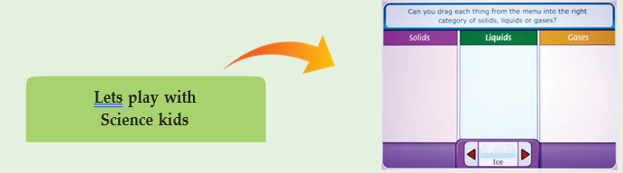
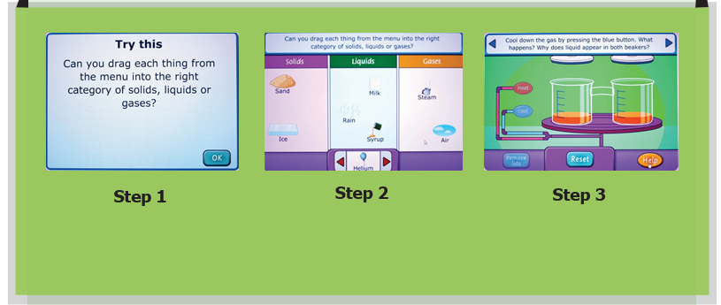

ICT Corner Types of matter

Step 1: To learn more about the matter around us type Science Kids in the Google browser and select games Go inside and select matter. Now the following logo can you drag will appear on the screen. Then click ok.
Step 2: Three divided columns will appear on the screen. The first section is for solid and the second section is for liquid and the third one is for gas. Now when we press this symbol, at the bottom items will appear at the bottom. We have to drag them to their respective column.

Types of matter URL:
http://www.sciencekids.co.nz/gamesactivities/gases.html